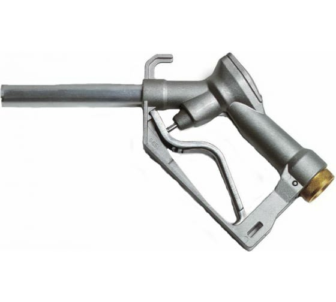

SELF 2000 - механический пистолет для ДТ, сопло - 25 мм, вход - 1" BSP(F)
Артикул: 1137
PIUSI (Италия)
Раздел: Заправочные краны · АЗС
Цена и наличие — по запросу. Поставляем оригинал и аналоги. Доставка по России.
Описание
SELF 2000 - механический пистолет для ДТ, сопло - 25 мм, вход - 1" BSP(F) производства PIUSI (Италия) — позиция из раздела «Заправочные краны» для АЗС. Компания SYNDICAT поставляет оборудование и комплектующие для автозаправочных и газозаправочных станций по всей России. Цена и наличие «SELF 2000 - механический пистолет для ДТ, сопло - 25 мм, вход - 1" BSP(F)» — по запросу: оставьте заявку или позвоните, подберём оригинал или аналог и рассчитаем доставку.